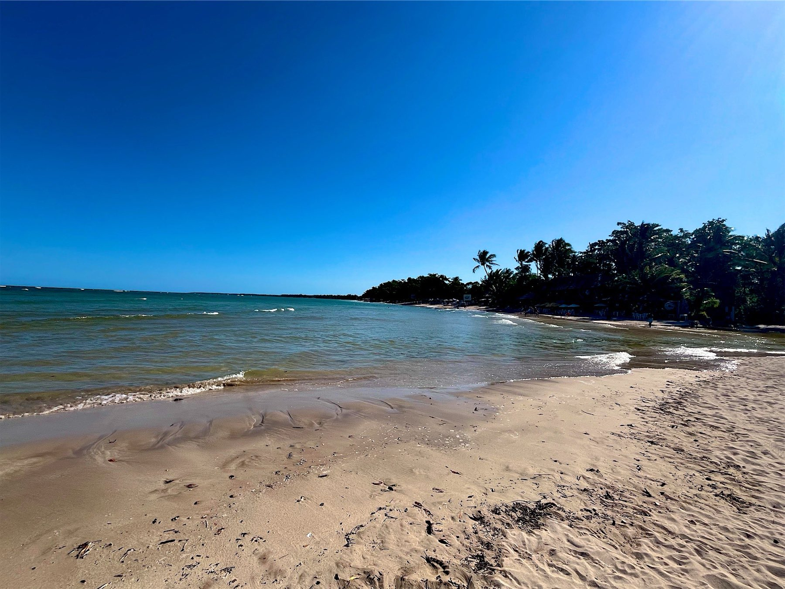
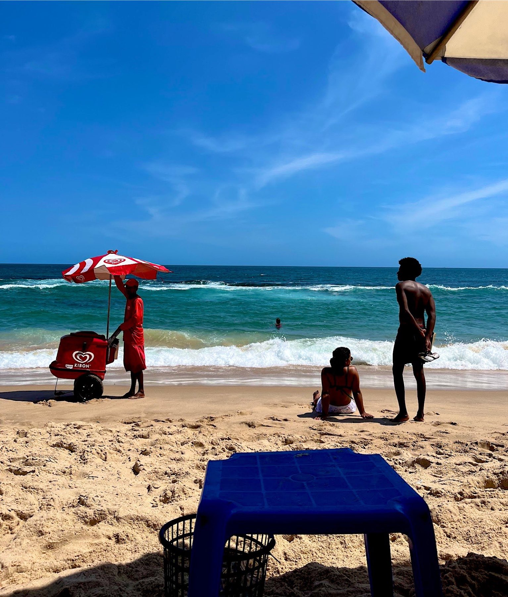
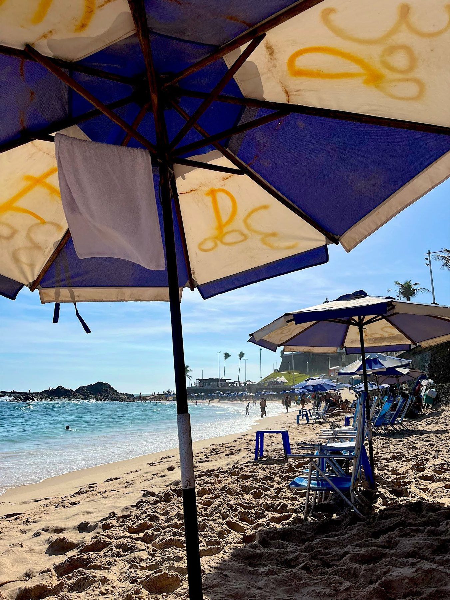
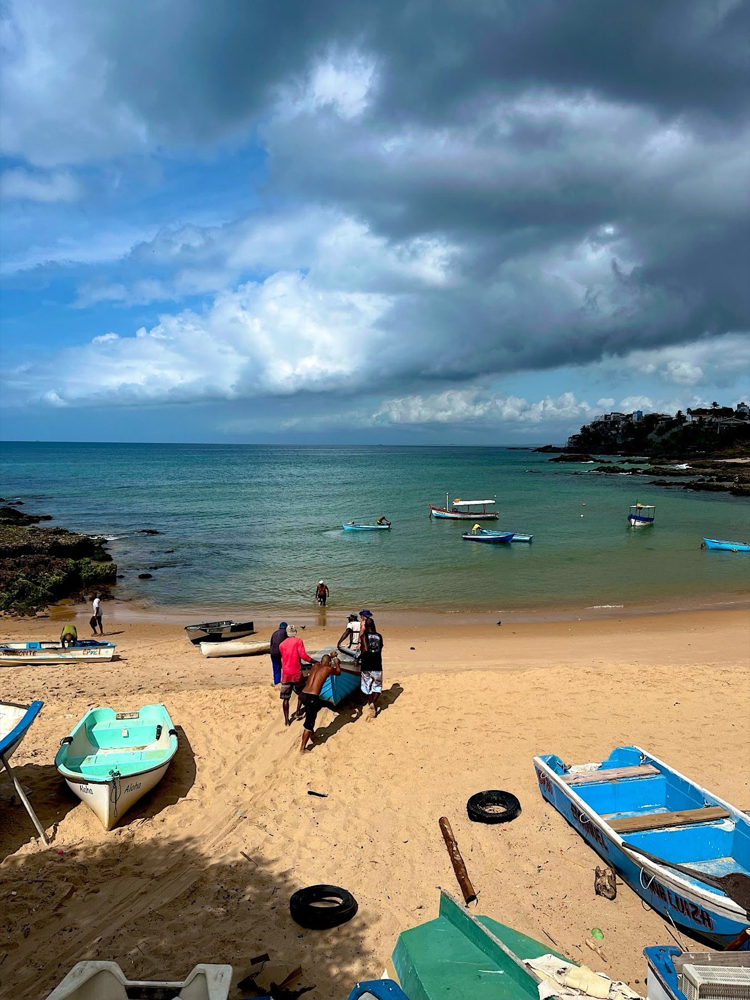
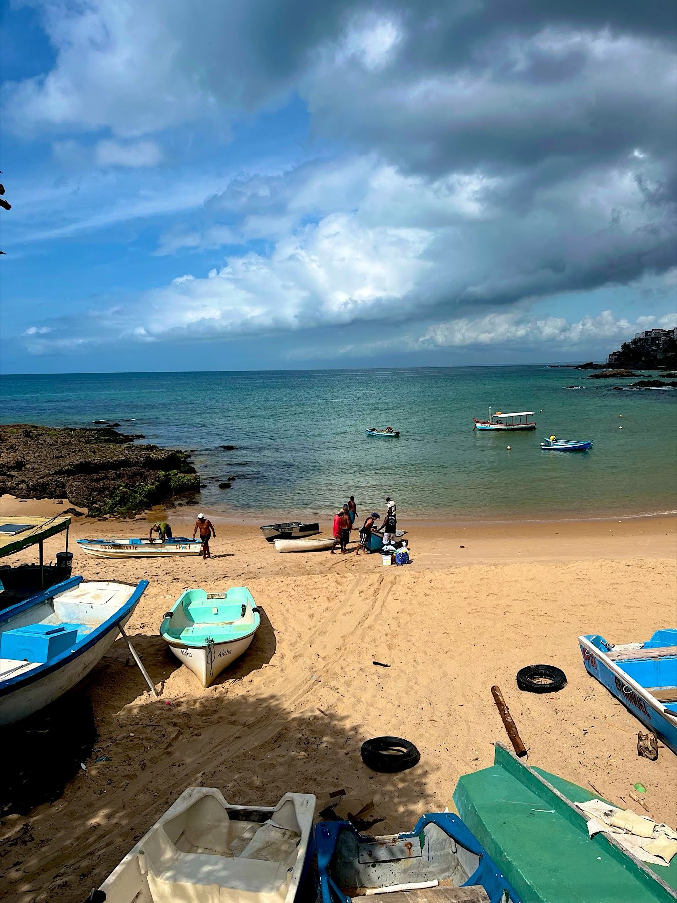
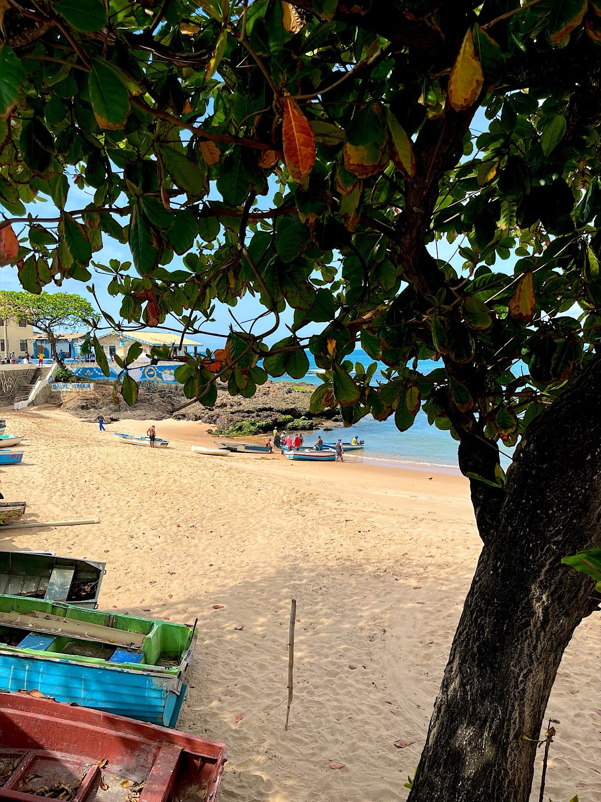
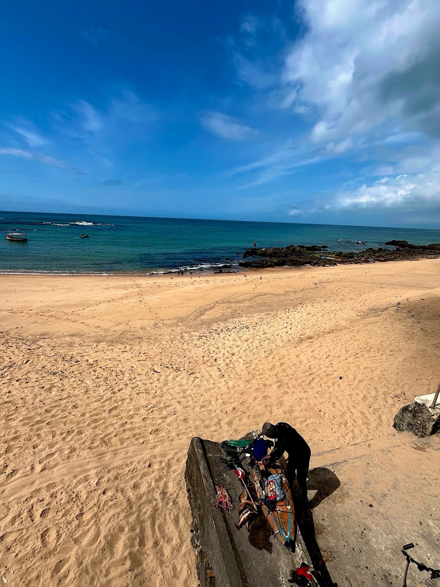
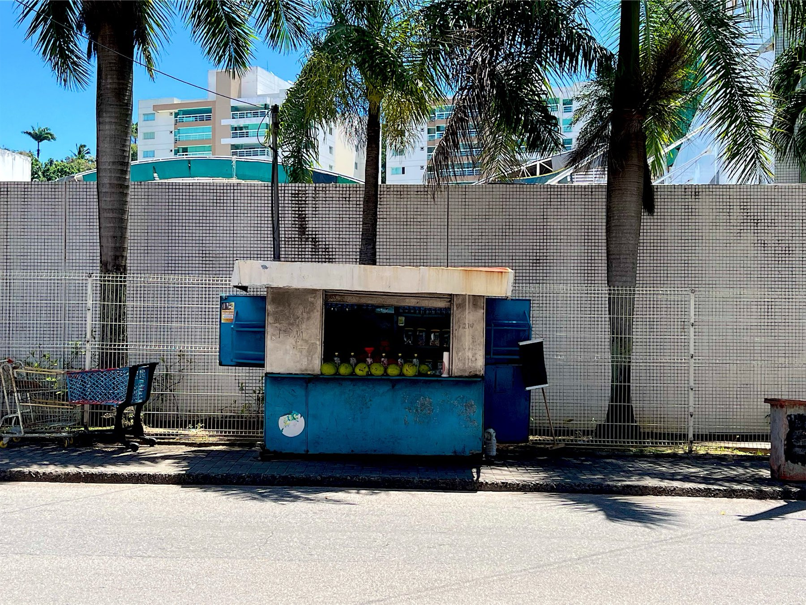
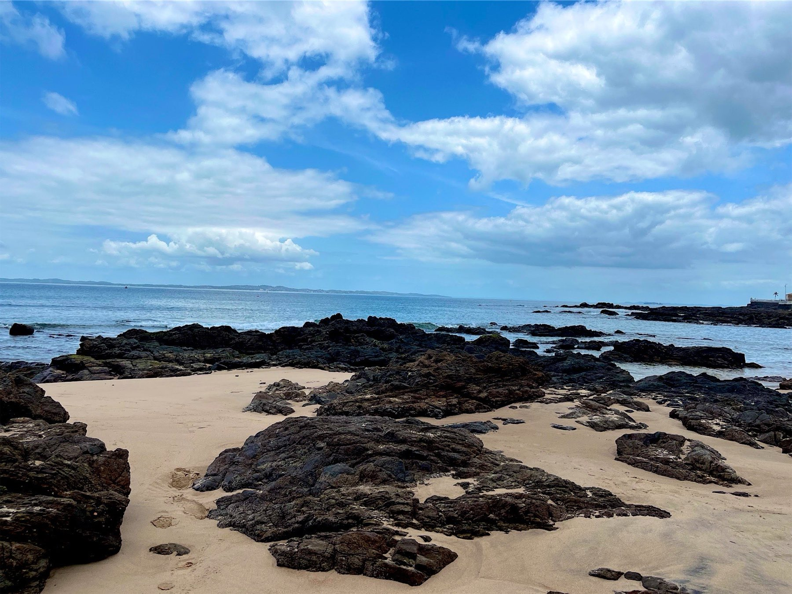
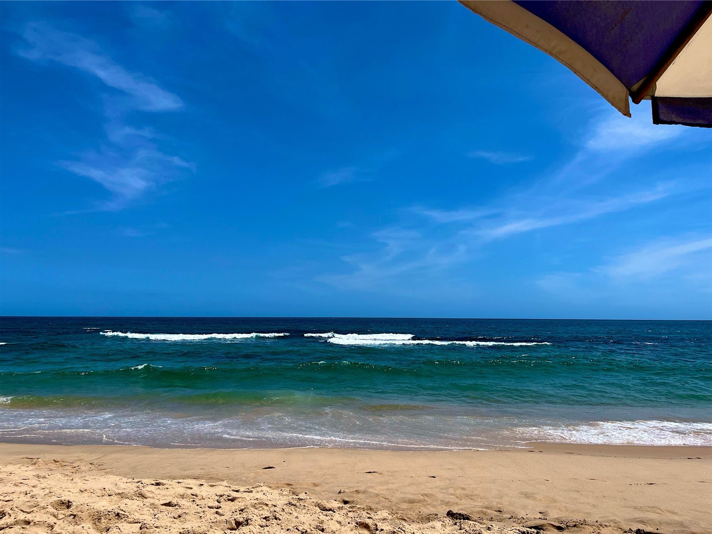

How locals do the beach
For Brazilians, the beach is a full-day event. Families arrive with huge coolers of drinks and snacks to last everyone until sunset, set up under umbrellas and stay for hours. There are floating bars, music, games and every kind of entertainment you can imagine — join in.

Umbrellas and chairs: what to pay
There are plenty of umbrellas to rent. You can get one from about R$10 per day; in our experience anything over R$20 is not worth it — walk a little further and you’ll find a better deal.

Bargaining on the sand
Bargaining is normal with anyone selling something who isn’t an official store — especially on the beach. Smile, ask the price first and counter politely. Agree before the food is cooked or the item is handed over.
Eat the fried cheese
Vendors grill and fry cheese on a stick right on the sand. It’s amazing — we totally recommend trying it, ideally with an ice-cold drink. Fresh fruit cocktails and coconut water are everywhere too.

Tides change everything
There’s a high and a low tide every day on every beach, and the best time to swim or snorkel depends a lot on the location. Some beaches reveal calm natural pools at low tide; others are better at high tide. Check a tide table (tábua de marés) or ask your pousada before you head out. See our guide to Bahia’s natural pools.

Keep your belongings safe
It’s not safe to leave your things unattended on public beaches in Brazil. Bring only what you need, and when you go into the water take a floating waterproof bag with your phone, keys and money. More tips in our Bahia safety guide.

In pictures









Frequently asked questions
How much does a beach umbrella cost in Bahia?
You can rent a beach umbrella from about R$10 per day. In our experience, anything over R$20 is not worth it.
Can you leave your things on the beach in Brazil?
No. It is not safe to leave belongings unattended on public beaches. Take a floating waterproof bag into the water for your phone, keys and money.
When is the best time to snorkel in Bahia?
It depends on the tide and the beach. Many natural pools are best around low tide, so check a local tide table or ask your pousada.